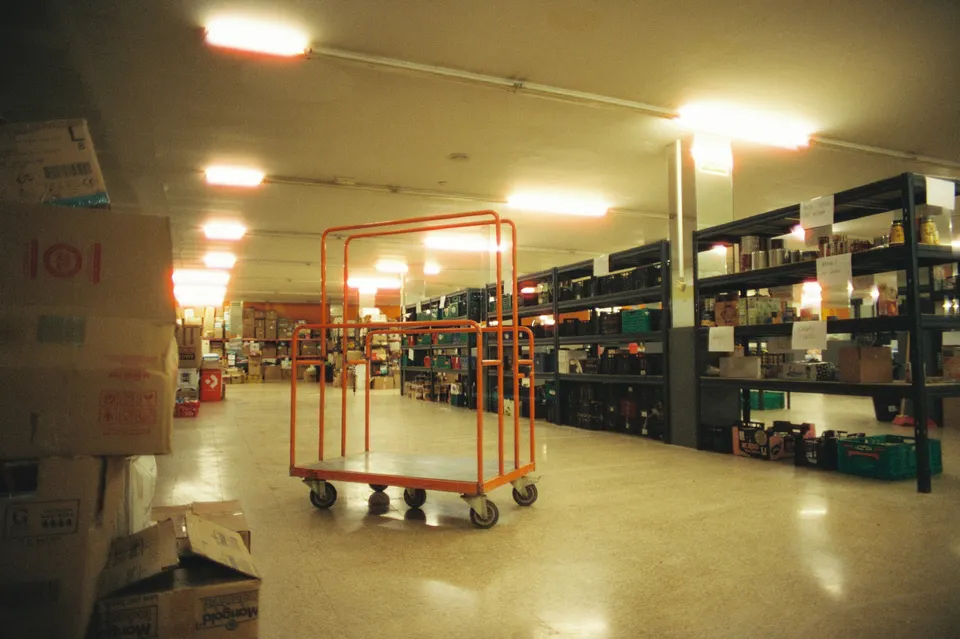
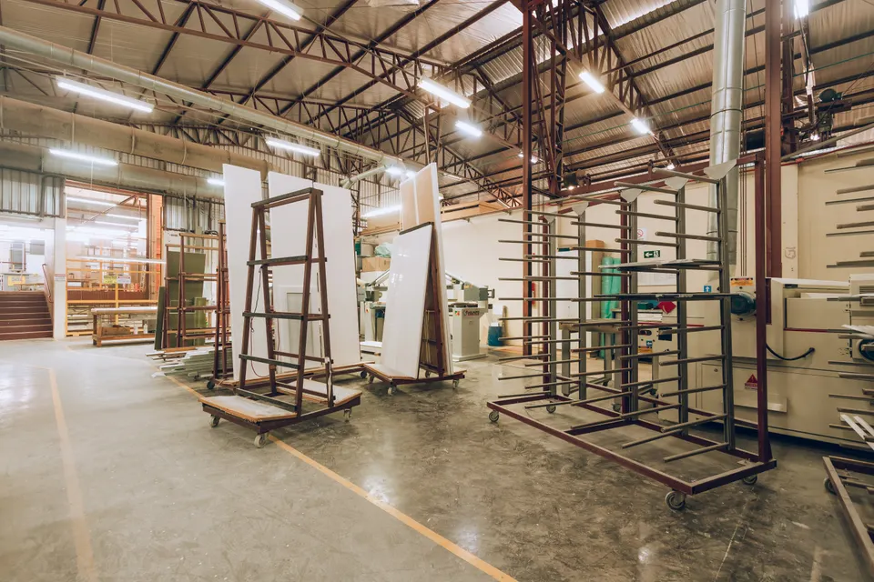
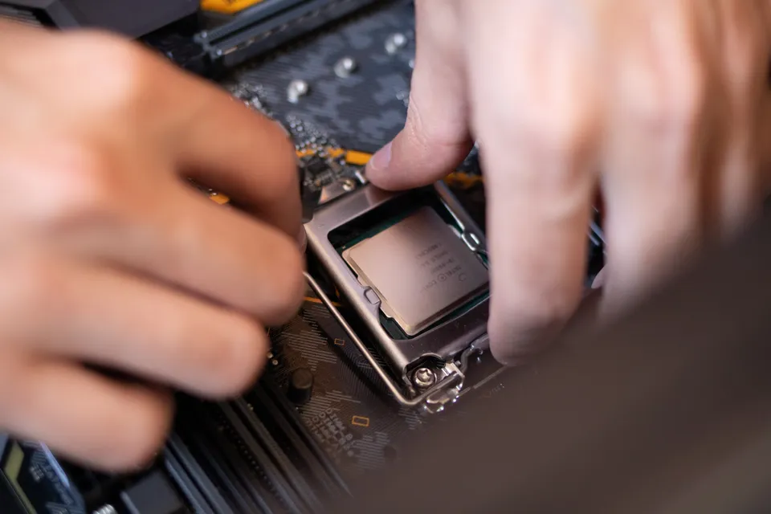

Transport & logistique
Postes administratifs, imprimantes, connexions réseau et équipements informatiques courants.
OFFRE 02 · POUR UN BESOIN TECHNIQUE RÉCURRENT
Votre entreprise utilise chaque jour des ordinateurs, un réseau et des logiciels indispensables, sans forcément avoir besoin d’un informaticien salarié à temps plein. Je propose des interventions régulières pour le support, la maintenance courante et le suivi des équipements.
Journées programmées · périmètre défini avant le démarrage
À QUI S’ADRESSE CETTE OFFRE ?
Pour les structures de 10 à 60 salariés qui recherchent un interlocuteur technique régulier ou un renfort ponctuel, dans un périmètre clairement défini.
Postes administratifs, imprimantes, connexions réseau et équipements informatiques courants.

Ordinateurs, assistance aux utilisateurs, équipements réseau et périphériques.
Outils bureautiques, messagerie, partage de documents et connectivité.

Informatique administrative, maintenance des postes et diagnostic réseau. Les systèmes industriels critiques et logiciels métier spécialisés restent hors périmètre.
QUAND FAIRE APPEL À UN RENFORT ?
Ce format peut convenir si les sujets informatiques s’ajoutent aux responsabilités du dirigeant ou de l’équipe administrative.
Le dirigeant ou l’équipe administrative prend les sujets informatiques en plus de son activité.
Vous souhaitez un interlocuteur qui connaît votre environnement, vos équipements et vos priorités.

Un déploiement, un renouvellement de matériel ou une période de forte activité approche.
Vous avez besoin de quelques journées par mois, sans recruter à temps plein.
UN PÉRIMÈTRE TECHNIQUE CLAIR
Les tâches et responsabilités sont convenues avant le démarrage. Le support N1/N2 est assuré selon le périmètre maîtrisé et les outils de votre environnement.

Diagnostic et dépannage des postes, périphériques et incidents courants rencontrés par les utilisateurs.
Administration courante Windows/Linux, gestion des utilisateurs, mises à jour et accès selon le périmètre défini.
Configuration IP, diagnostic DNS/DHCP, connectivité locale et Wi-Fi professionnel courant.

Inventaire, documentation, déploiement de postes et périphériques, contrôles préventifs et comptes rendus.
UNE ORGANISATION PRÉVISIBLE
La fréquence, la durée, les tâches et les modalités sur site ou à distance sont cadrées avant la mission.
Une organisation hybride peut être définie selon les tâches, les accès et les besoins de l’équipe.
Fréquence et horaires convenus en amont. Pas d’astreinte permanente ni de disponibilité illimitée.
Quelques semaines à plusieurs mois, avec un périmètre et des responsabilités définis contractuellement.
FONCTIONNEMENT
Les modalités, les délais d’intervention et les horaires de disponibilité sont définis dans chaque contrat.
Premier échange sur les outils, les sites et les besoins de l’équipe.
Clarification des tâches, responsabilités et limites d’intervention.
Devis et fréquence des journées convenus avant de démarrer.
Interventions planifiées et compte rendu selon le format retenu.
ÉCHANGE SANS ENGAGEMENT
Échangeons sur votre organisation et déterminons ensemble le niveau d’accompagnement adapté.
alex@alexsander-it.fr Écrire un e-mail ↗RENFORT INFORMATIQUE
Ces informations m’aident à préparer un premier échange adapté à votre entreprise.